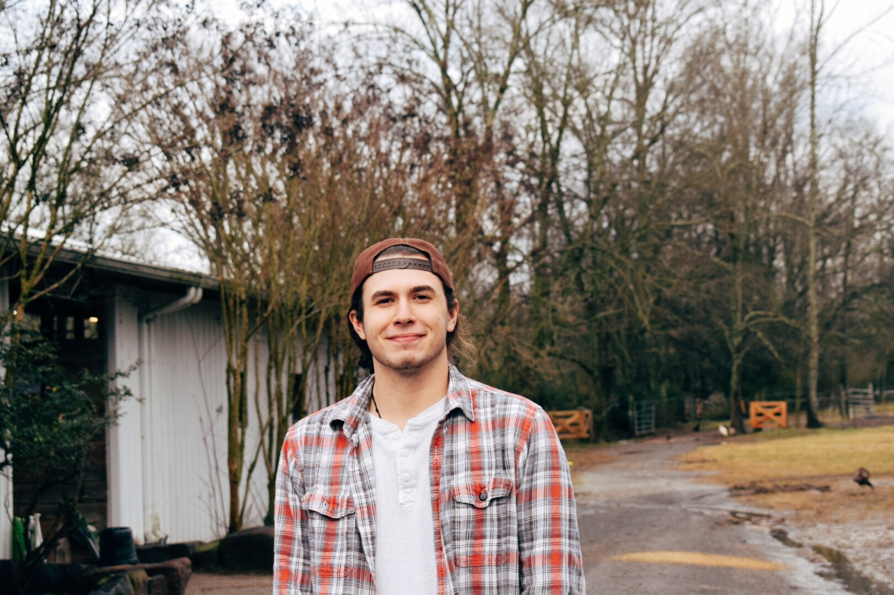

|
I transferred to UGA in Spring 2019, It came with many challenges and a lot of new opportunities. I never have felt so responsible and free at the same time. Before my time at University of Georgia I was a kid who lived in Augusta, Georgia going to college at our local university, Augusta University. It was a great school, but I always felt uneasy because I knew I could do better, but did not think it was possible. I worked hard at school and made good grades while working two jobs and living with my parents. My work was something I put my heart into whether it was me waking up at 5 in the morning to go brew coffee and serve breakfast at my coffee shop job or when I got home from school and cleaned up for a shift at a catering business. I did my best and loved what I did, but like I said…I wanted more. After seeing my cousin graduate from UGA and the smile on his face showing us his diploma, I knew right there I wanted to get THAT degree, not an easy local university degree. I wanted UGA. That is how I found my home at this University. Go Dawgs!! |
 |
I am currently 20 years old and going into my junior year at the University of Georgia. I thoroughly enjoy outdoor activities such as kayaking, hiking, and fishing. I look at everything in life like a hike up a mountain, whether it is a job, family matters, or just living in general. The only way to keep going is up the mountain, meaning that you must eat healthy, have a healthy mind, and keep your spirit as high as the top of the mountain. My work ethic shows this rationalization. I do not stop working until the job is finished and as designed. I also enjoy books and films of any genre, I love new perspective and books and films are the easiest way to understand another perspective on the other side of the world. That is why I believe I make a good leader, not just because of my work ethic, that is only half of a leader. I am very passionate about what I do and very compassionate about the people who work together for a bigger picture. |